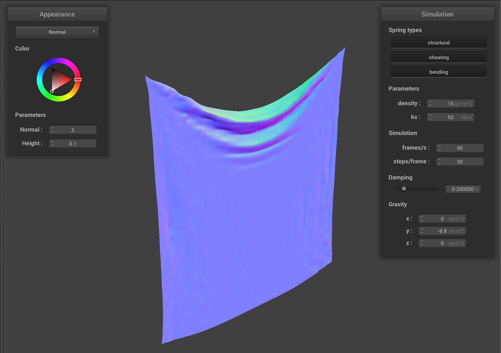
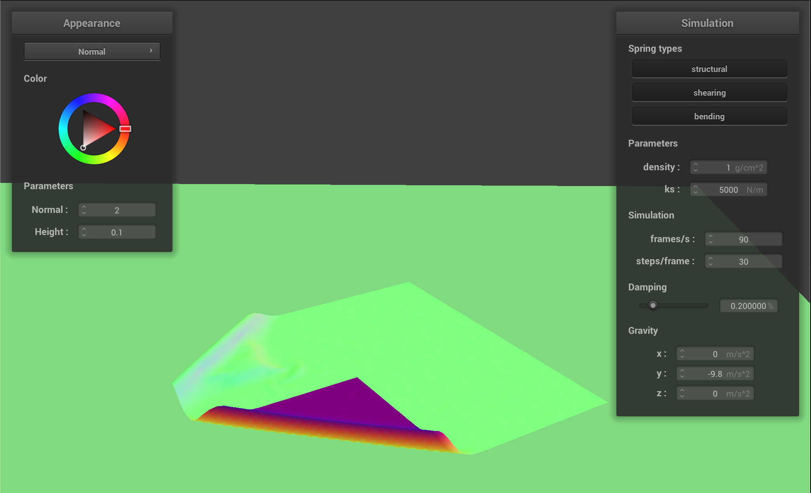
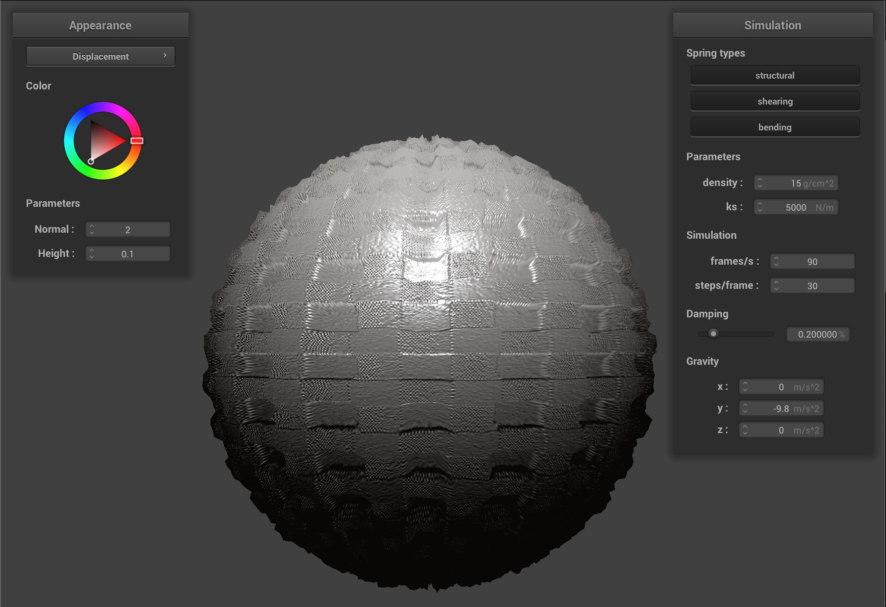

CS 184: Computer Graphics and Imaging, Spring 2024
Project 4: Cloth Simulator
Anthony Salinas Suarez
Website URL: https://cal-cs184-student.github.io/hw-webpages-sp24-AXM78251/hw4/docs/index.html
Overview
In this homework, I worked on simulating clothing movement using a simple mass and spring system and this was split up into five main components
which I will briefly touch on here. The five components included:
-
First creating the grid of mass and spring systems while making sure we account for bending, shearing, and structural contraints.
-
The second part included integrating the physical equations of motion that would then allow us to apply forces onto our cloth's
mass point to simulate movement between time steps.
-
The third step in this process included taking into account collisions between the cloth and any other objects that may be present
in the scene
-
The fourth step included integrating self collisions to account for the case where the cloth may collapse and "fall" onto the plane
thus allowing it to fold onto itself rather than clipping straight through the plane
-
Lastly I implemented a few basic GLSL shader programs that would allow us to sections of the graphic pipeline on the GPU rather
than the CPU
All of the above steps would come together and allow for a comprehensive project that allows for cloth movement simulation using a simple
mass and springs system as its foundation.
Part 1: Masses and springs
Implementation overview
For my implementation, I personally found the spec to be extremely helpful and modeled my code off that. I first began by
creating all the point masses on the grid and for that, I followed a simple double for loop approach and made sure
to space apart my masses evenly. I also had to take into account whether we were in a "horizontal" or "vertical" orientation
and made sure to make the correct Vector3D position object instance based off this. Lastly, it was during this first portion
where I also iterated through the pinned masses to identify whether the newly created point mass should be pinned or not and I
made sure to update this field member appropriately as well.
Once I got done with instantiating the grid with all the point masses, I moved on to the second part of my implementation which included
creating all the structural, shearing, and bending constraints as outlined in the spec. It was a bit hard to visualize how this
would be coded up so I first decided to draw up some diagrams/visuals on my tablet to identify potential edge cases to consider for each
of the three constraints. Once I developed a solid idea for all the cases I had to consider, then I went through and coded up my
implementation. My implementation followed a very similar structure to the previous part where I made a double for loop to iterate
through all the point masses in the grid and for every point, I made sure to include any of the structural, shearing, and bending
constraints as needed.
Take some screenshots of scene/pinned2.json from a viewing angle where you can clearly see the cloth wireframe
to show the structure of your point masses and springs.
Show us what the wireframe looks like (1) without any shearing constraints,
(2) with only shearing constraints, and (3) with all constraints.
|
No shearing constraints
|
|
Only shearing constraints
|
|
All constraints
|
Part 2: Simulation via numerical integration
Experiment with some the parameters in the simulation.
To do so, pause the simulation at the start with P, modify the values of interest, and then resume by pressing P again.
You can also restart the simulation at any time from the cloth's starting position by pressing R. For each of the above, observe any noticeable differences in the cloth compared to the default parameters
and show us some screenshots of those interesting differences and describe when they occur.
Describe the effects of changing the spring constant ks; how does the cloth behave from start to rest with a very low ks?
A high ks?
I messed around with a variety of values for the spring constant, ks, including 50, 500, 5000, 50000, and lastly 75000. Anything
beyond a value of 75000 resulted in the simulation acting erratically and the cloth going outside of the depicted scene. The default
spring constant value, ks, was designated to be 5000 and this resulted in the original default cloth. As the k value decreased,
in my case to values of 50 and 500, I noticed that the cloth became more "bendable" and "foldable" and this effect was very apparent in the
images below. On the other hand, as the k value increased, the cloth became more "sturdy" and "rigid-like."
|

Spring constant, ks, value: 50
|
Spring constant, ks, value: 500
|
|
Spring constant, ks, value: 5000 (Initial value)
|
 Spring constant, ks, value: 50000
Spring constant, ks, value: 50000
|
Spring constant, ks, value: 75000
|
What about for density?
Similar to the spring constant, I also tried a variety of values for the density. In my case, this included testing
3.75, 7.5, 15, 30, and 60. Based on the images below, I noticed that as I increased the value of the density,
the cloth, once again, become more "bendable" and "foldable", whereas for smaller density values, the "bending"
and "folding" effect was more reduced.
|
Density value: 3.75
|
Density value: 7.5
|
|
Density value: 15 (Initial value)
|
Density value: 30
|
Density value: 60
|
What about for damping?
For damping, I also tried testing a variety of values, in this case: 0.05, 0.10, 0.20, 0.40, and 0.80. The effects of meddling
around with the damping value is not as easy to identify in the images below, however, the effect is very much present
in the simulation when you change the damping value. For values smaller than the default value of 0.20, the simulation seemed to
take a lot longer to converge and come to rest and the cloth seemed to be oscillating back and forth several times before
ultimately stopping. For values larger than the default value of 0.20, the similation of the cloth converged a lot quicker to rest
and there was very little to no apparent oscillations present: the cloth seemed to converge to rest as soon as the simulation began.
 Damping value: 0.05%
Damping value: 0.05%
|
Damping value: 0.10%
|
|
Damping value: 0.20% (Initial value)
|
Damping value: 0.40%
|
Damping value: 0.80%
|
Show us a screenshot of your shaded cloth from scene/pinned4.json in its final resting state!
If you choose to use different parameters than the default ones, please list them.
|
Isometric perspective!
|
Another different perspective!
|
Part 3: Handling collisions with other objects
Implementation overview
To handle collisions with spheres, I first extracted two key pieces of information given our point: the last position and the
current position. Using these two pieces of information, I then calculated the Euclidean distance from the current position
to the center of the sphere and then I tested to see whether this distance was smaller or equal to our radius and if this condition
was true, then we knew that the point at the current time stamp was indeed inside or on the surface of the sphere. If this was the case,
then I got the surface intersection vector by retrieving the point originating from the center of the sphere to the radius
along the direction of the current point position. I then got the correction vector by subtracting the last position of our point
from this surface intersection and I applied the correction as needed, scaled down by the friction as outlined on the spec.
To handle collisions with planes, I once again extracted the last position and the current position of our point. Next I used the
plane equation to calculate the offsets from our plane given both the last and current position. Given these two offsets, I
then multiplied them together and the logic here was the following:
-
If the sign of the multiplication was a positive, then that means that the point has not crossed over to the other side of the plane
from the previous timestep to the current timestep
-
If the sign of the multiplication was negative, then this means that the point has crossed this "boundary" and has gone
over to the other side of the plane, and this was the case that we were particularly interested in.
So, if the sign of the multiplication was negative, then I proceeded by following the "ray intersection with plane" approach
and calculating what t is given the point on the plane, the last and current positions of the point passed in,
and the normal vector of the plane. I then calculated the intersection by getting the last position of the point and multiplying
it by this t value along the direction in which the given point was travelling. Using this information, I then computed the
correction vector and, making sure to account for the displacement above the intersection, and applied the correction as needed,
scaled down by the friction as outlined in the spec.
Show us screenshots of your shaded cloth from scene/sphere.json in its final resting state
on the sphere using the default ks = 5000 as well as with ks = 500 and ks = 50000.
|
$\text{ks} = 500$
|
Initial configuration ($\text{ks} = 5,000$)
|
$\text{ks} = 50,000$
|
|
Describe the differences in the results.
The above images depict the simulation of the cloth falling on top of a sphere with different spring constant, ks, values. In this
case, the values tested were 500, 5000, and 50000. Based on the above simulations and corresponding iamges, it seems like
the smaller the spring constant value is, the more the cloth seems to "fold over" the sphere, whereas for greater spring constant
values, the cloth does not seem to "fold over" as much and instead lays on top of the sphere with a more "flat-like" appearance.
Show us a screenshot of your shaded cloth lying peacefully at rest on the plane.
If you haven't by now, feel free to express your colorful creativity with the cloth!
(You will need to complete the shaders portion first to show custom colors.)
Part 4: Handling self-collisions
Show us at least 3 screenshots that document how your cloth falls and folds on itself,
starting with an early, initial self-collision
and ending with the cloth at a more restful state (even if it is still slightly bouncy on the ground).
|
Self collision 1
|
Self collision 2
|
Self collision 3
|
|
Vary the density as well as ks
and describe with words and screenshots how they affect the behavior of the cloth as it falls on itself.
 $\text{density} = 1$
$\text{density} = 1$
|

$\text{density} = 1$
|
|
$\text{density} = 15$ (Default value)
|
$\text{density} = 15$ (Default value)
|
|
$\text{density} = 50$
|
$\text{density} = 50$
|
|
$\text{ks} = 1,000$
|
$\text{ks} = 1,000$
|
|
$\text{ks} = 5,000$ (Default value)
|
$\text{ks} = 5,000$ (Default value)
|
|
$\text{ks} = 7,500$
|
$\text{ks} = 7,500$
|
For the spring constant, ks, I tried testing out different values. In my case, those values included 1000, 5000 (default value), and 75000.
One thing I noticed based on the above photos was that when my spring constant value was 1000, there seemed to be a lot of "smaller" folds present
in the cloth at the time of it making contact with the plane and this ultimately led to a lot of rough folds that were never able to fully
smoothen out. On the contrary, when my spring constant value was 7500, the size of the folds present in the cloth at the time
of it making contact with the plane were "bigger" and many of these folds were resolved and led to the cloth looking a lot more flattened and smoothened out
on top of the plane. Based on the above results, then the conclusion can be made that lesser spring constant values lead to a lot of rough and uneven
folds that never fully unfold whereas greater spring constant values have "bigger" folds and leads to the cloth being a lot more flattened
out on top of the plane.
For density, the values I tried out included 1, 15 (default value), and 50. One thing I noticed, and that can be seen in the images above, is
that when my density value was 1, there seemed to be a lot of less, but "bigger" folds present at the time that the cloth first made contact with the plane
and this ultimately led to the cloth being far more smoother and flattened on top of the plane. On the other hand, when my density value was 50,
there were a lot more "smaller" folds present in the cloth at the time of it making contact with the plane and this ultimately led to a lot of rough and
uneven folds that were never fully resolved and this is clearly seen in the images above. Based on the above results, the conclusion can be made
that this works inversely to the spring constant value where a lesser density value leads to less rougher folds and leads to the cloth being a lot more smooth
and flattened out whereas greater density values leads to rough and uneven folds that never fully unfold.
Part 5: Cloth Sim
Explain in your own words what is a shader program and how vertex and fragment shaders work together to create lighting and material effects.
A shader program is a program that allows us to run parallel in the GPU and execute sections of the graphics pipeline. This is far better
than what we were doing previously, where all of the raytracing computation was taking place on the CPU and thus took up a large amount of
time to render. In our case, we wrote some basic GLSL shader programs and we primarily dealt with two basic OpenGL shader types...vertex shaders
and fragment shaders.
-
Vertex shaders allows us to apply transformations and modify geometric properties that are then used by the fragment shader.
-
Fragment shaders allow us to take the geometric attributes that are computed and modified from the vertex shaders to compute
a final color and/or material for any and all fragments after rasterization has taken place.
So in essence, vertex shaders allow us to modify existing geometric properties of fragements that are then used by fragment shaders to
generate a final color and or texture material.
Explain the Blinn-Phong shading model in your own words.
Show a screenshot of your Blinn-Phong shader outputting only the ambient component, a screen shot only outputting the diffuse component, a screen shot only outputting the specular component, and one using the entire Blinn-Phong model.
The Blinn-Phong shading model is a model that allows us to simulate how lights interact with surfaces and in our case the 3 types of lighting we are
concerned with include: Ambient Lighting, Diffuse Lighting, and Specular Lighting.
-
Ambient lighting assumes that constant lighting is applied to all parts of the scene equally and as such, is reflected equally off all
objects and surfaces that may be present in the scene.
-
Diffuse lighting assumes that now the intensity of the light at a given position on the surface depends on the direction of the normal vector
of the surface point relative to the light source.
-
Specular lighting assumes that when light interacts/intersects with a surface that it then bounces off in a specific direction.
The intensity of the light hitting the surface is still dependent on the normal vector of the surface point relative to the light source.
However, now we also take into consideration the angle between the viewer and the direction in which the light bounces off. The specular component
also allows us to make objects/surfaces appear glossy and shiny as well.
|
Ambient component only
|
Diffuse component only
|
|
Specular component only
|
Complete Blinn-Phong model
|
Show a screenshot of your texture mapping shader using your own custom texture by modifying the textures in /textures/.
Show a screenshot of bump mapping on the cloth and on the sphere.
Show a screenshot of displacement mapping on the sphere.
Use the same texture for both renders.
You can either provide your own texture or use one of the ones in the textures directory,
BUT choose one that's not the default texture_2.png.
Compare the two approaches and resulting renders in your own words.
Compare how your the two shaders react to the sphere by changing the sphere mesh's coarseness by using -o 16 -a 16 and then -o 128 -a 128.
|
Bump Mapping (-o 16 -a 16)
|
Bump Mapping (-o 128 -a 128)
|
|
|
Displacement Mapping (-o 16 -a 16)
|

Displacement Mapping (-o 128 -a 128)
|
|
Based on the above images, we can analyze and see that for the 16x16 case, it seems like bump mapping performs better overall
and this is evident as the 16x16 case for displacement mapping has some abnormal deformities as a result of the texture present on the sphere.
However, when it comes to the 128x128 case, it definitely looks as if displacement mapping performs better as it is able to
encapsulate much more of the texture that is present on the sphere while at the same time also displaying an accurate portrayal of
the lighting present.
Show a screenshot of your mirror shader on the cloth and on the sphere.
 Mirror Shader on the Cloth
Mirror Shader on the Cloth
|
Mirror Shader on the Sphere
|
|
Explain what you did in your custom shader, if you made one.
N/A
Contributions
I had no partners on this project :((.